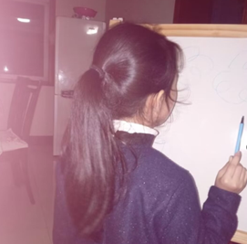
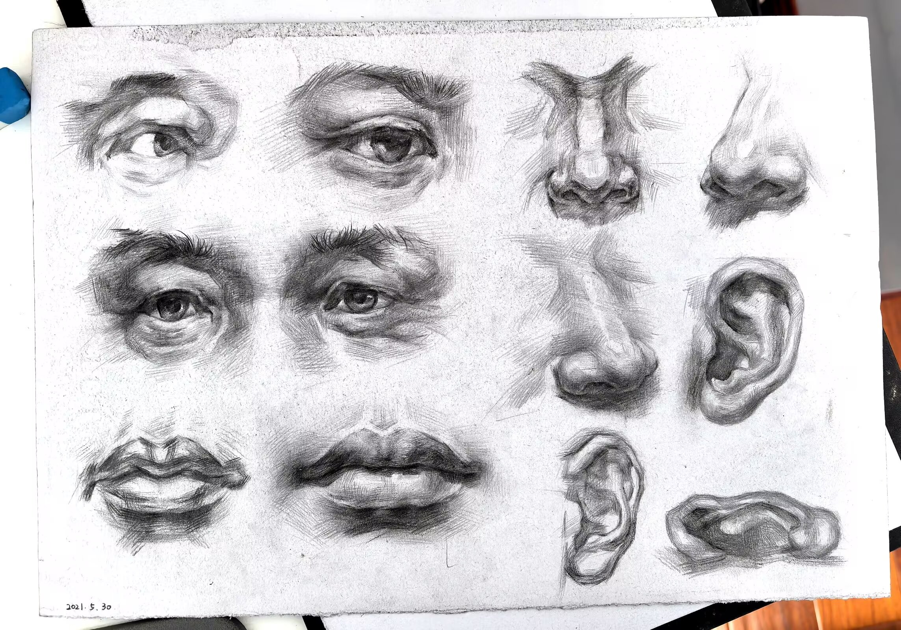

| Back Homepage | - Experience | - Current insights |
Sketching is a very basic form of painting - it reflects the fundamental principles of painting by depicting objects in a certain way. Today, I am very grateful for my persistence and efforts over the years, which gave me the opportunity to slow down in today's fast-paced life, and gave me the opportunity to express my understanding of beauty with the relationship between black and white and gray. |
||
|  | ||